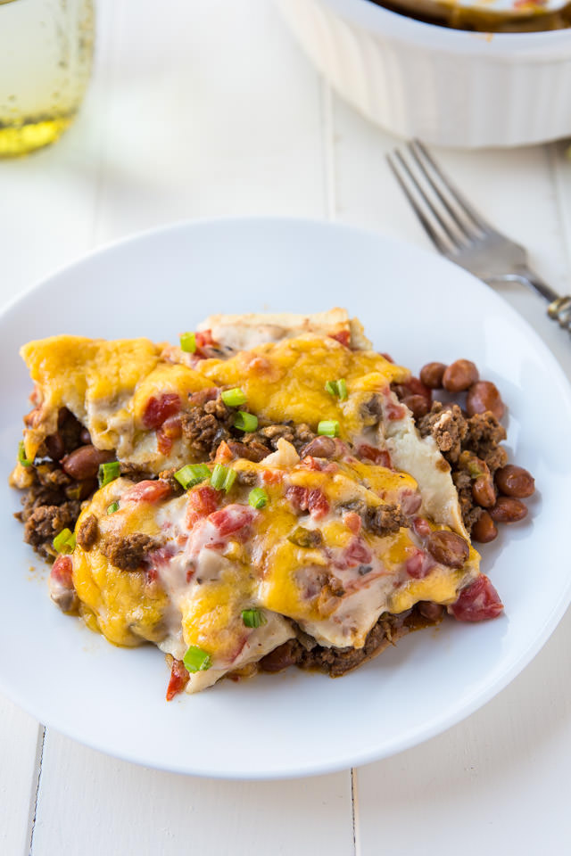

Firecracker Enchilada Casserole

Description
Zazz up your summer celebrations with cuisine that pops!
Firecracker Enchilada Casserole has all the crowdpleasers - meat, cheese, and tortillas. Sure to be a hit at any event!
Ingredients
- 2 lbs of lean ground beef
- 1 large onion, chopped
- 2 tablespoons chili powder
- 2 teaspoons ground cumin
- 1 teaspoon salt
- 15 oz ranch style beans
- 6 corn tortillas
- 1.5 cups shredded monterey jack cheese
- 1.5 cups shredded cheddar cheese
- 10 oz Rotel tomatoes & chilies
- 1 10.75oz can of cream of mushroom soup, undiluted
Steps
- Cook the ground beef and onion in a large skillet until meat is brown and onion is tender, drain.
- Add chili powder, cumin, and salt; stir well.
- Cook meat mixture over low heat 10 minutes.
- Spoon meat mixture into a 13- x 9- x 2-inch baking pan.
- Layer beans, tortillas, and cheese over meat mixture.
- Pour tomato liquid over cheese, chop tomatoes and spread tomatoes and chiles over cheese.
- Spread soup over top of casserole.
- Cover baking pan; refrigerate overnight.
- Bake, uncovered, at 350° for 1 hour.
- Let sit for 10 minutes before serving.